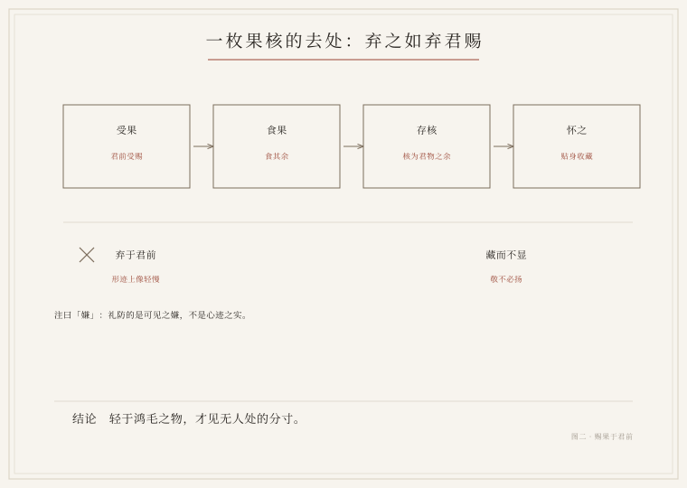

曲礼上 · 一·七十八 · 第 76 课
在君前受赐果物，若果有核，食毕当藏核于怀，不弃于地。注一句点破：「嫌弃尊者物也」。
说什么事：赐果于君前，其有核者怀其核。
落在哪一层：仪。极小一事，见敬之细。
为何编在此位：上节讲受赐之不辞，此节讲受赐之后如何处置其残余。受之以敬，处之以敬。
【经】賜果於君前，其有核者懷其核。
【注】嫌棄尊者物也。木實曰果。
果 注「木实曰果」。桃李梅枣之属，皆有核。
怀其核 怀，藏于怀中也。食毕不弃核于君前之地。
嫌弃尊者物 注五字最重。弃核于地，是弃君所赐之物；虽核为余滓，亦君物之余。
此节无疏 孔疏于此句不别出，唯注可据。故本课字义多依注与上下文推求。
在君前受赐果物，凡有核的，吃罢把核藏在怀里，不丢在君前。
一节只讲一枚果核的去处。礼之细，不在大事上显，而在这种无人看见的小处：核丢在地上，没有谁会指责；可它落在君前，就是把君所赐的一部分当废物扔了。
第一层 果为君物 赐果之时，果已属受赐者；然而物出于君，则其余滓亦带君意。弃之如弃君赐。
第二层 怀之为藏 怀是贴身之处，藏而不显。敬不必扬；把核悄悄收起，比当众表白更近礼意。
第三层 嫌之一字 注曰「嫌」。嫌者，嫌于形迹：形迹上像轻慢，便是轻慢。礼防的是可见之嫌，不是心迹之实。
第四层 细处见大 一枚核的分量，轻于鸿毛；正因其轻，才见一个人是否在无人处仍守着分寸。
与今日何干 在长辈家吃水果，果皮果核不随手放在人家几案上，收进自己手边的纸里。此节之今形。
| 左 | 右 |
|---|---|
| 赐果于君前 | 君前受果 |
| 有核者 | 木实之核，食余之物 |
| 怀其核 | 藏于衣，不弃于君前 |
| 嫌弃尊者物 | 弃核如弃君赐之余 |
| 木实曰果 | 果为专名，非一切食物 |
| 此节无疏 | 唯注可据，义由上下文推 |
画一案：案上白瓷盘中剩果一枚已被剖食，盘侧地面干净无核；案下衣襟一角鼓起一枚小核的轮廓，示藏而未弃。不画人面、不写文字。赭色只在盘中果皮一道。
